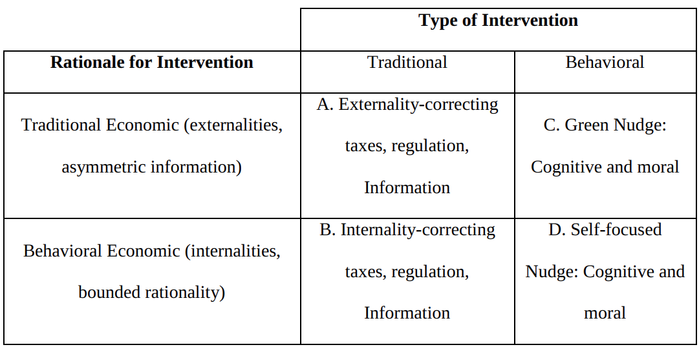

Green Nudges
Topics in Economics, ESCP, 2023-2024
Introduction
Reminder
Economic consensus: agents respond to incentives
Two versions:
Fully Rational / Limited Rationality / Rational Inattention
Behavioural World: systematic deviations from rationality
Carbon Tax
Oeconomic Rational
- modify the system to provide the right incentives
- first best: tax carbon
- otherwise: modify constraints to make carbon de facto more expensive
- examples
Should work well for rational agents: especially firms…
Another perspective:
- directly affect people’s decision context to affect their behaviour
Examples:
…/.
- a nudge: a cheap, …
Examples:

Second column
Examples:
Fist Column
Behavioural Economics
System 1 vs System 2
Incentives vs Nudges
Deviations from rationality
The (neo)-classical view
- Agents are perfectly rational…
- they don’t make errors
- …and pursue their self interest
- they are selfish
The ultimatum game

[TODO] graph of the protocol
Setup
Two players negotiate over a fixed amount of money (the pie):
- player 1 demands a proportion of the pie
- player 2 sees the size and player’s 1 demand and either rejects or accepts it
- accept: split is implemented
- reject: both players get 0

- hundreds of papers since original one by Guth et al.
- consistent results: average offer is 40%, offers below 20% have high chances to be rejected, lots of 50-50
- note that the “rational choice” for both agents would be 99-1!
- it is an example of other regarding preferences (aka altruism)
What determines the split? What influences altruism?
. . .

. . .
Can you devise an experiment to measure the effect of “shame”?
The ultimatum game: measuring shame
Improved protocol
- for half of the candidates, exactly as before (control group)
- for the other half (treatment group), the two players, don’t see each other don’t have any contact. Only the demand from player one is communicated to player 2.
Result:
- -> players are less generous but the result holds
Reflection Effect or Loss Aversion

- Result from literature
- first lottery: 92% chose B
- second lottery: 80% chose A
- Intepretation:
- agents are risk-seekers when it is about loosing money
- agents are risk-averse when it is about winning money
The Certainty effect / The Allais paradox

- Result from literature
- first lottery: most people choose A
- second lottery: most people choose B
- Intepretation: people underweigh outcomes that are merely probable compared to those that are certain
Expected utility
- Expected utility framework
- simple assumptions on people’s preferences
- agents maximize \(U(x)\) where \(U\) is increasing and concave
- standard in economics and finance
- Concavity implies that agents are risk agents are risk averse
Prospect theory

- Prospect theory was proposed by Kahneman and Tversky in 1979
- Attempts to describe realistically how humans evaluate losses and gains
- Prospect is a close synonym for gamble
Some Behavioural Anomalies
Behavioural anomalies
We classically distinguish two kinds of behavioural anomalies
- predisposition towards error
- mental shortcuts (aka heuristics)
They have been studied by psychologists for a while
- And are being revisited systematically by economists/psychologists
- …following the “replication crisis”

Setup (Study from Lord, Ross & Leeper, 1979)
48 undergraduates supporting and opposing capital punishment were exposed to 2 purported studies, one seemingly confirming and one seemingly disconfirming their existing beliefs about the deterrent efficacy of the death penalty. As predicted, both proponents and opponents of capital punishment rated those results and procedures that confirmed their own beliefs to be the more convincing and probative ones.
Result
Participants gave higher ratings to studies that confirmed their initial point of view even when studies on both sides had been carried out by the same method. In the end though everyone had read all the same studies, both those who initially supported the death penalty and those who initially opposed it reported that reading the studies had strengthened their beliefs.
. . .
When you search for or interpret new information in a way that supports existing beliefs as opposed to challenge them.
Test:
- Write down 3 examples of successes that you have had
- Write down 3 examples of failures
- What were the causes of the success?
- What were the causes of the failures?
Interpretation
- Attribution bias occurs when people attribute their success to skills, and their failures to randomness (Taleb 2001)
- It is when we attribute praise/blame to the person rather than the situation. However, successful people can also mistake hard work for luck. Timing can be important but so is developing the skills to be able to take opportunities when presented. After all, “the harder you practice, the luckier you get” Gary Player
. . .
Overestimating how much control we have over events
Example:
- People are given a mug worth 10$
- Then the opportunity to exchange it for pens worth 11$
- Most people don’t take the deal
A striking example
Do you see other examples? Implications
. . .
People place a higher valuation on an asset, purely by owning it.
Example: We tend to think that footballers make more money than dentists, but only because we don’t see the failures (there’s a selection bias)
- Dentistry is a more lucrative profession since it maximises your expected income across all alternative histories
- One cannot consider a profession without taking into account the average of the people who enter it, not the sample of those who succeed Taleb (2001)
Judgement based on the ease with which instances come to mind
Question:
What percentage of members of the United Nations are countries in Africa?
Experiment:
- Show a number: e.g. 65
- Ask participants: “What percentage of members of the United Nations are countries in Africa?”
Result
- People who saw a 10 had an average guess of 25%
- People who saw a 65 had an average guess of 45%
- Correct answer: 28%. There are 54 African countries, and 192 UN member states
. . .
Viewing things in relation to an irrelevant comparison point
Don’t forget to add 65 on the board before.

How oil spills harm birds, dolphins, sea lions and other wildlife
Example: Following the Exxon Valdez oil spill, people were asked how much they were willing to pay for equipment that would do the following:
- Save 2,000 birds: $80
- Save 20,000 birds: $78
- Save 200,000 birds: $88
. . .
The almost complete neglect of quantities in such emotional contexts has been confirmed many times
. . .
Definition: Over-reliance on our immediate emotional reaction
TODO: List of behaviour effects:
Green Nudges
A nudge is defined as a change in the decision environment that influcences people’s behavior without prohibiting any choices or significantly changing the economic incentives
from Thaler and Sunstein, 2009
Originally, the role of nudges was to counteract poor choices made by individuals, in areas such as personal savings and health
Traditional: improve welfare of agents: a behavioral solution to a behavioral problem.
Green nudge: influence people’s behavior, through changes in the choice architecture, in order to reduce negative externalities: a behavioral solution to a traditional economic problem.
Classification

Cognitive Nudges
Cognitive nudges: correct for bounded rationality, inattention of self-control. Make it easier to “do the right thing”.
For instance, help individuals with self-control problems, present-bias….
Example of cognitive self-focused nudges: put healthy food at the top of a restaurant menu.
Example of cognitive green nudge: does not assume that individuals make poor choices for themselves because of bounded rationality. But it workds because individuals have cognitive or self control limitations.
bounded rationality or self-control could lead an individual defaulted into a green tariff to stick with the new socially desirable default.
Moral Nudges
A moral nudge draws on people’s social preferences, their desire for status, to follow norms or to have a positive self-image. The nudge rewards “doing the right thing” by providing the individual with moral (dis)utility.
Compare with the neoclassical agent
Cognitive Nudge: help agent solve optimization Moral Nudge: affects agents preferences
| Nudge Type | Example |
|---|---|
| Defaults | If I manage to summarize that in a few words, will that fit? |
| Simplification of information and salience | |
| Changes in physical environment | |
| Reminders | |
| Social comparison | |
| Normative appeal and peer pressure | |
| Commitment and goal Setting |
Defaults
The default effect refers to the tendency of people to stick with an alternative already chosen by someone else, even when the cost of making an active choice is very small.
Why does it work?
- people interpret the default as a suggestion from someone better informed
- lowers the cost of a decision (from no-decision to the default)
- loss aversion or status quo bias make people stay with the default
Thermostat story: lower standard from 20…
Famous example of prosocial default nudge: organ donors.
Simplification of Information and Salience
example: consumers pay little attention to fuel and electricity costs compared with the sales prices they face when buying cars or lightbulbs.
- labels, order in which the information is presented
Changes in the Physical Environment
example: reduce food waste in buffet restaurants using smaller plates
few academic and adequately statistically powered evaluations of such nudges.
Reminders
A reminder increases attention to a decision and reduces forgetfulness. However, reminders can also impose moral costs if they draw attention to a decision that the decision maker would rather avoid (Damgaard and Gravert, 2018). For example, being reminded can create guilt and/or cognitive dissonance.
electricity bill, which is a type of reminder, on hourly electricity consumption. They found a .6–1 percent reduction in electricity consumption following receipt of the bill
Moral pleas / moral suasion
Ito, Ida, and Tanaka (2018), moral suasion was used to reduce energy use during peak hours. The following message was received by some households: “Substantial energy conservation will be required for the society during critical peak-demand hours in summer and winter.”
Electricity use was reduced by around 8 percentage points in the moral suasion group and by around 15 percent by the households that received economic incentives. However, the effect of moral suasion diminished quickly when repeated, while the effect of the economic incentives did not. In Egebark and Ekström (2016), a moral message was provided in order to reduce the use of printer paper, but no effects were found.
Commitment and Goal Setting
Harding and Hsiaw (2014) investigated how voluntary goal setting concerning electricity savings affects actual electricity use and found that those who set a realistic goal save more than those who set a too low or too high goal.
. In Baca-Motes et al. (2013), some hotel guests were given the opportunity to commit to acting more sustainably and received a pin enabling them to signal commitment. Treated guests were more likely to reuse their towels than those who were not asked to commit. The effect of the commitment was stronger if they received a pin, and it was also stronger if the commitment was more specific (reuse towels) than general (act in an environmentally friendly way)
Social Comparisons and Social Preferences
the extent to which social information affects behavior depends not only on the actual information regarding what others do (i.e., descriptive messages) but also on whether it conveys approval of certain behavior (i.e., injunctive messages).
A series of randomized field experiments aimed at water and energy conservation suggests that the provision of both descriptive and injunctive messages can affect individuals’ behavior by reducing water and electricity use
study by Delmas and Lessem (2014), who studied the effect of both private information to the household and public information to all neighbors on electricity use. They found that only a combination of private and public information had an effect on energy use (a 20 percent reduction). S